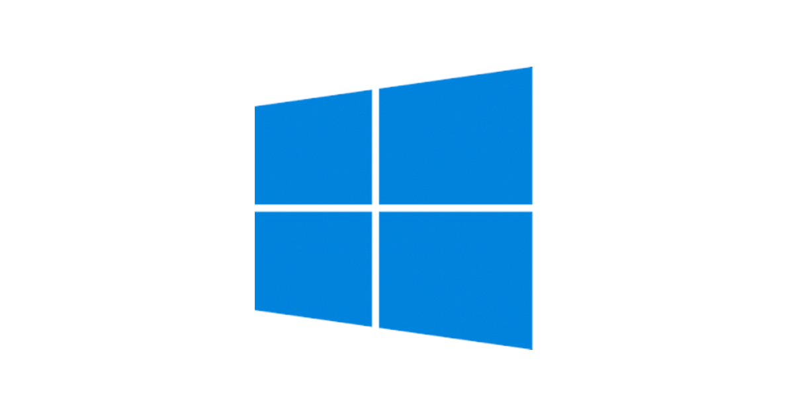

Zastanawiasz się nad wyborem systemu operacyjnego? A może planujesz zmienić swój obecny?
Na naszej stronie znajdziesz porównanie i informacje o systemach operacyjnych, które ułatwią Ci wybór idealnego systemu dla Ciebie.

Microsoft Windows
Jest to rodzina systemów operacyjnych stworzonych przez firmę Microsoft.
Systemy rodziny Windows działają na serwerach, systemach wbudowanych oraz na komputerach osobistych, z którymi są najczęściej kojarzone.
Prezentację pierwszego graficznego środowiska pracy z rodziny Windows firmy Microsoft przeprowadzono w listopadzie 1984.
Wówczas była to graficzna nakładka na system operacyjny MS-DOS, powstała w odpowiedzi na rosnącą popularność graficznych interfejsów użytkownika, takich jakie prezentowały na przykład komputery Macintosh.
Nakładka, a później system operacyjny Windows po pewnym czasie zdominowała światowy rynek komputerów osobistych.
Pierwszym stabilnym wydaniem był Windows 1.01. Windows 1.00 był wersją beta, nigdy nie wydaną.
Linux – rodzina uniksopodobnych systemów operacyjnych opartych na jądrze Linux.
Linux jest jednym z przykładów wolnego i otwartego oprogramowania: jego kod źródłowy może być dowolnie wykorzystywany, modyfikowany i rozpowszechniany.
Od kwietnia 2017 roku Android (z zaadaptowanym jądrem Linuxa) oficjalnie jest najpopularniejszym systemem operacyjnym na świecie.
Linux jest darmowy i otwarty, gdy czas twój jest gówno warty.
macOS (dawniej OS X, a także Mac OS X) – rodzina uniksowych systemów operacyjnych produkowanych i rozprowadzanych przez Apple Inc.
Dostępny oficjalnie jedynie dla komputerów Macintosh, instalowany fabrycznie na nich od 2002 roku.
13 czerwca 2016 roku na WWDC została ogłoszona zmiana nazwy na macOS w związku z potrzebą unifikacji nazw używanych przez Apple dla swoich systemów operacyjnych.